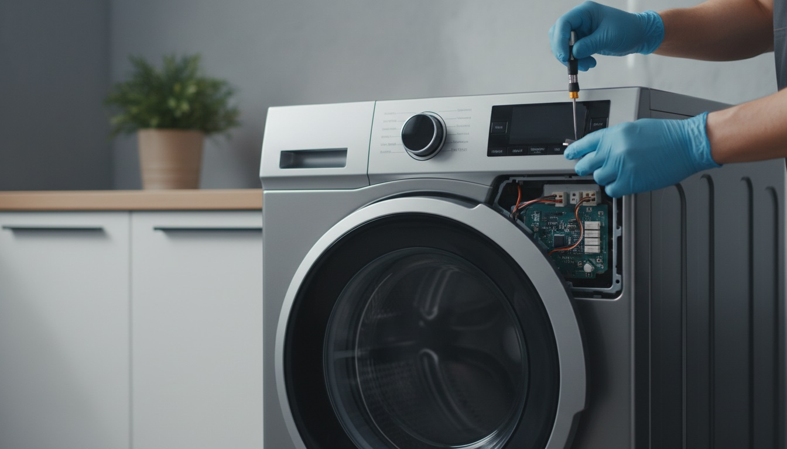

Fast and reliable refrigerator, washer, dryer, oven and dishwasher repair services in Tempe, Phoenix, Mesa, Chandler and surrounding areas.
We repair all major household appliances
Refrigerator not cooling? We repair all major refrigerator brands.
Fast washer repair services for leaks, spinning and drainage problems.
Dryer not heating? Our technicians provide same-day repairs.
Dishwasher not cleaning properly? We can help today.
We repair electric and gas ovens, ranges and cooktops.
Quick response and affordable appliance repair services.

Arizona Freeze Appliance Repair provides professional appliance repair services across Tempe and surrounding Arizona cities.
We work with refrigerators, washers, dryers, ovens, stoves and dishwashers from all major brands including Samsung, LG, Whirlpool, GE and Frigidaire.
Schedule ServiceWe proudly serve customers throughout Arizona
Call Arizona Freeze Appliance Repair for fast and reliable service.
Call Now